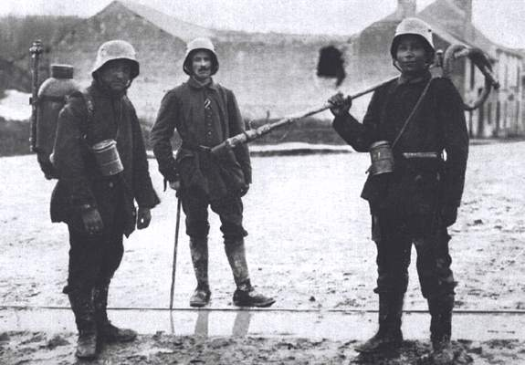
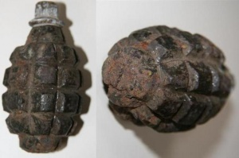
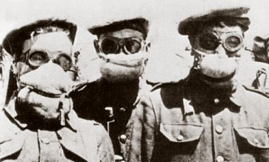
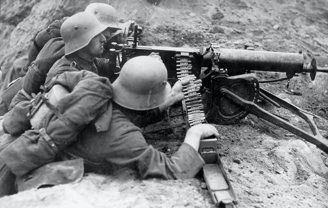

Wapens
Welke ontwikkelingen werden er in de Eerste Wereldoorlog doorgevoerd?
Vlammenwerper
De vlammenwerpers waren voor de Duitse soldaten een geweldig middel om de vijand te verslaan. Ze konden de vlammenwerpers op hun rug dragen en daarmee waren ze dus nog effectiever. In tegenstelling tot granaten, die de loopgraven van de vijand vernietigde, zorgde de vlammenwerper dat alleen de vijand eraan ging. Hierdoor konden de Duitsers later de loopgraven van de vijand overnemen. De eerste vlammenwerper die door de Duitsers werd gebruikt was bij de Slag van Verdun.

Handgranaten
Handgranaten werden voor de Eerste Wereldoorlog al gebruikt door de Engelse, maar ze speelden een grote rol voor de Eerste Wereldoorlog. Op een handgranaat zit een tijdsontsteker waardoor hij niet gelijk afgaat in je hand. Veel soldaten raakte gewond of waren gesneuveld door deze granaten. Dat komt omdat een handgranaat voor veel schade zorgde. Door het grote gebruik ervan werd het landschap rondom het slagveld een grote kuilenlandschap. Vooral in het niemandsland had het gevolgen. Doordat de grond zo was aangetast werd het als het regende een moderige goedje. Hierdoor waren er veel soldaten verdronken in de modder door de handgranaten.

Gifgas
Het gifgas was een effectieve manier om te zorgen dat veel vijanden ten val kwamen. De Duitsers waren de eerste die gebruik maakten dit massavernietiginswapen. Het begon met gifgas dat gemaakt was van chlorine, hierbij kreeg je een zere keel en pijnlijke longen. Het bleek een effectieve aanval te zijn aangezien 5.000 soldaten binnen 10 minuten dood waren. Later probeerde de Britten ook gifgas te gebruiken. Dit liep heel erg mis aangezien de wind was gedraaid en al het gas dus naar de Britse linies ging in plaats van de Duitse. Daarna gebruikte de Duitsers mosterdgas, waarbij ze een veel ernstigere dood stierven.
